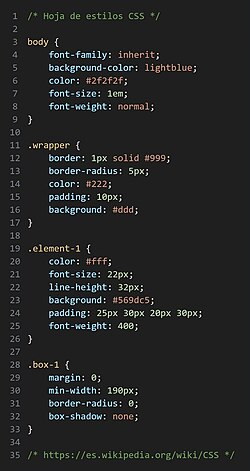

CSS (siglas en inglés de Cascading Style Sheets; en español: «hojas de estilo en cascada») es un lenguaje informático especializado en definir y cohesionar la presentación de un documento escrito en un lenguaje de marcado como HTML o XML; por ello, puede ser aplicado a cualquier documento etiquetado en XHTML, SVG, XUL, RSS, etcétera. Junto con el propio HTML y JavaScript, CSS está en la base de la tecnología usada por muchos sitios web para crear páginas visualmente atractivas, interfaces de usuario para aplicaciones web y GUIs para aplicaciones móviles.
CSS está diseñado principalmente para marcar la separación del contenido del documento y la
forma de presentación de este, características tales como las capas o layouts, los colores y las fuentes.
Esta separación busca mejorar la accesibilidad del documento, proveer más flexibilidad y control en la
especificación de características presentacionales, permitir que varios documentos HTML compartan un mismo
estilo usando una sola hoja de estilos separada en un archivo .css, y
reducir la complejidad y la repetición de código en la estructura del documento.
La separación del formato y el contenido hace posible presentar el mismo documento marcado en diferentes estilos para diferentes métodos de renderizado, como en pantalla, en impresión, en voz (mediante un navegador de voz o un lector de pantalla), y dispositivos táctiles basados en el sistema Braille. También se puede mostrar una página web de manera diferente dependiendo del tamaño de la pantalla o tipo de dispositivo. Los lectores pueden especificar una hoja de estilos diferente, como una hoja de estilos CSS guardado en su computadora, para sobreescribir la hoja de estilos del diseñador.
La especificación CSS describe un esquema prioritario para determinar qué reglas de estilo se aplican si más de una regla coincide para un elemento en particular. Estas reglas son aplicadas con un sistema llamado de cascada, de modo que las prioridades son calculadas y asignadas a las reglas, así que los resultados son predecibles.
La especificación CSS es mantenida por el World Wide Web Consortium (W3C).
El MIME type text/css está registrado para su uso por CSS descrito en el RFC
2318. El W3C proporciona una herramienta de validación de CSS gratuita para los documentos CSS.
CSS fue propuesto por primera vez por Håkon Wium Lie el 10 de octubre de 1994. Al mismo tiempo, Lie trabajaba con Tim Berners-Lee en el CERN. Muchos otros lenguajes de hojas de estilos fueron propuestos al mismo tiempo, y las discusiones en las listas de correo públicas dentro del W3C dieron lugar a la primera Recomendación CSS por el W3C (CSS1) en 1996. En particular, la propuesta de Bert Bos fue influyente; él fue el coautor de CSS1 y es reconocido como el cocreador de CSS.
Las hojas de estilo han existido de una forma u otra desde los comienzos del Standard Generalized Markup Language (SGML) en la década de los 80, y CSS fue desarrollado para proveer hojas de estilos para la web. Un requerimiento para un lenguaje de hoja de estilos web era que las hojas de estilo vinieran en diferentes estilos en la web. Por lo tanto, los lenguajes de hojas de estilos existentes como DSSSL y FOSI no fueron adecuados. CSS, por otro lado, permite al documento ser influido por múltiples hojas de estilo por medio de los estilos en «cascada».
A medida que HTML fue creciendo, llegó a abarcar una amplia variedad de capacidades de diseño para satisfacer las demandas de los diseñadores web. Esta evolución dio al diseñador mayor control sobre la apariencia del sitio, con el costo de un HTML más complejo. Variaciones en las implementaciones de los navegadores web, como ViolaWWW y WorldWideWeb, hicieron más difícil la consistencia de la apariencia del sitio web, y los usuarios tenían menos control sobre cómo era mostrado el contenido web. El navegador/editor creado por Tim Berners-Lee tenía hojas de estilos que fueron introducidas dentro del programa. Las hojas de estilos, por lo tanto, no eran enlazadas a los documentos en la web. Robert Cailliau, también del CERN, quería separar la estructura de la presentación, de modo que diferentes hojas de estilo podrían describir diferentes presentaciones para impresión, pantallas y editores.
Mejorar las capacidades de la presentación en la web fue un tema de interés para muchos en las comunidades web, y 9 diferentes lenguajes de hojas de estilos fueron propuestos en la lista de correo www-style. De esas nueve propuestas, dos influenciaron profundamente en lo que sería CSS: Cascading HTML Style Sheets y Stream-based Style Sheet Proposal (SSP). Dos navegadores fueron usados para pruebas para las propuestas iniciales; Lie trabajó con Yves Lafon para implementar CSS en el navegador Arena creado por Dave Raggett. Bert Bos implementó su propia propuesta SSP en el navegador Argo. Desde entonces, Lie y Bos trabajaron juntos para desarrollar el estándar CSS. La 'H' se eliminó del nombre porque estas hojas de estilo pueden ser aplicadas a otros lenguajes de marcado además de HTML.
La propuesta de Lie fue presentada en la conferencia "Mosaic and the Web" (más tarde llamada WWW2) en Chicago, Illinois en 1994, y de nuevo con Bert Bos en 1995. En ese tiempo el W3C ya estaba siendo establecido, y mostraba interés en el desarrollo de CSS. Organizó un taller para ese fin presidido por Steven Pemberton. Esto resultó en que W3C le dio más trabajo sobre CSS a lo resultados del Comité de Revisión Editorial (ERB). Lie y Bos eran el equipo técnico principal en esta parte del proyecto, con participantes adicionales como Thomas Reardon de Microsoft. En agosto de 1996 Netscape Communication Corporation presentó una alternativa de lenguaje de hoja de estilos llamada JavaScript Style Sheets (JSSS). La especificación nunca fue finalizada y quedó obsoleta. A finales de 1996, CSS estaba listo para ser oficial, y la recomendación CSS 1 fue publicada en diciembre.
El desarrollo de HTML, CSS, y DOM había sido realizado en un solo grupo, el HTML Editorial Review Board (ERB). A comienzos de 1997, el ERB fue dividido en tres grupos de trabajo: HTML Working Group, liderado por Dan Connolly del W3C; DOM Working group, liderado por Lauren Wood de SoftQuad; y CSS Working Group, liderado por Chris Lilley del W3C.
El grupo de trabajo de CSS comenzó corrigiendo errores que no habían sido revisados en el CSS 1, resultando en la creación de CSS 2, el 4 de noviembre de 1997. Fue publicado como una recomendación el 12 de mayo de 1998. Las adiciones a CSS de allí en adelante, conocidas colectivamente como "CSS3", tomaron un aspecto modular, desarrollándose cada función de forma independiente.
En 2005 el grupo de trabajo de CSS decidió mejorar los requerimientos de los estándares de forma más estricta. Esto significó que los estándares ya publicados como CSS 2.1, CSS3 Selectors y CSS3 Text fueron retrocedidos del estado "Recomendaciones candidatas" a "Borrador de trabajo".
|
Hojas de estilo en cascada (CSS) |

|
|  |
|
Ejemplo de código fuente escrito en CSS. |
CSS tiene una sintaxis simple y usa un conjunto de palabras clave en inglés para especificar los nombres de varias propiedades de estilo. Una hoja de estilos consiste en una serie de reglas. Cada regla, o conjunto de reglas consisten en uno o más selectores, y un bloque de declaración.
Los selectores declaran qué etiquetas se aplican a los estilos que coincidan con la etiqueta o atributo señalados en la regla.
Los selectores pueden aplicarse a:
- Todos los elementos de un tipo, como los párrafos
<p>. - Elementos seguidos de un atributo, en particular:
- id: identificador, un identificador único para la etiqueta.
- class: clase, un identificador para anotar múltiples elementos.
Las clases y los identificadores son sensibles a las mayúsculas, comienzan con letras, y pueden incluir caracteres alfanuméricos y guiones bajos. Una clase se aplica a cualquier número de elementos. Un identificador se aplica a un solo elemento.
Las pseudoclases son usadas en los selectores CSS para permitir el formateo usando información que no está
incluida en el documento. Un ejemplo de una pseudoclase muy usada es :hover, que
identifica el contenido que está siendo apuntado por un puntero, como el cursor del ratón. Este nombre se añade
al selector, de esta manera: a:hover o #elementid:hover.
Una pseudoclase clasifica elementos, como :link o :visited,
mientras que un pseudoelemento hace una selección de elementos parciales, como ::first-line o
::first-letter.
Los selectores pueden ser combinados de muchas maneras para obtener una mayor flexibilidad y precisión.
Múltiples selectores pueden ser unidos en una misma línea para especificar elementos por su ubicación, tipo de elemento,
identificador, clase, o cualquier combinación de estos. El orden de los selectores es importante.
Por ejemplo, div.myClass {color: red;} aplica a todos los
elementos <div> con la clase myClass, mientras
que .myClass div {color: red;} aplica a todos los
elementos <div> que estén dentro de cualquier elemento con la clase myClass.
La tabla siguiente proporciona un resumen de la sintaxis de los diversos selectores, indicando su forma de uso y la versión de CSS en la que fueron introducidos:
| Patrón | Significado | Nivel CSS de aparición |
E |
un elemento de tipo E | 1 |
E:link |
un elemento E que es un enlace que no ha sido visitado (:link) o ya fue visitado (:visited) | 1 |
E:active |
un elemento E que está realizando cierta acción por parte del usuario | 1 |
E::first-line |
la primera línea formateada de un elemento E | 1 |
E::first-letter |
la primera letra formateada de un elemento E | 1 |
.c |
todos los elementos con class="c" | 1 |
#myid |
el elemento con id="myid" | 1 |
E.warning |
un elemento E que pertenece a la clase "warning" | 1 |
E#myid |
un elemento E cuyo id sea "myid" | 1 |
E F |
un elemento F descendiente de un elemento E | 1 |
* |
cualquier elemento | 2 |
E[foo] |
un elemento E con un atributo "foo" | 2 |
E[foo="bar"] |
un elemento E cuyo atributo "foo" tiene un valor exacto de "bar" | 2 |
E[foo~="bar"] |
un elemento E cuyo atributo "foo" tiene una lista de valores separados por espacios, y uno de ellos es "bar" | 2 |
E:first-child |
el primer hijo de un elemento E | 2 |
E:lang(eo) |
un elemento E cuyo idioma esté especificado en "eo" | 2 |
E::before |
contenido generado antes del contenido del elemento E | 2 |
E::after |
contenido generado después del contenido del elemento E | 2 |
E > F |
un elemento F hijo de un elemento E | 2 |
E + F |
un elemento E inmediatamente sucedido de un elemento F | 2 |
E[foo^="bar"] |
un elemento E cuyo atributo "foo" tenga un valor que comience exactamente con la cadena "bar" | 3 |
E[foo$="bar"] |
un elemento E cuyo atributo "foo" tenga un valor que finalice exactamente con la cadena "bar" | 3 |
E[foo*="bar"] |
un elemento E cuyo atributo "foo" tenga un valor que contenga la subcadena "bar" | 3 |
E:root |
un elemento E en la raíz del documento | 3 |
E:nth-child(n) |
un elemento E, el n-esimo hijo de este | 3 |
E:nth-last-child(n) |
un elemento E, el n-esimo hijo de este, contando desde el último hijo | 3 |
E:nth-of-type(n) |
un elemento E, el n-esimo hijo de este, contando solo los del mismo tipo que el padre | 3 |
E:nth-last-of-type(n) |
un elemento E, el n-esimo hijo de este, contando solo los del mismo tipo que el padre, y desde el último hijo | 3 |
E:last-child |
el último hijo de un elemento E | 3 |
E:first-of-type |
un elemento E, los primeros hermanos de su tipo | 3 |
E:last-of-type |
un elemento E, los últimos hermanos de su tipo | 3 |
E:only-child |
el único hijo del elemento E | 3 |
E:only-of-type |
el único hermano del elemento E | 3 |
E:empty |
un elemento E que no posea hijos (incluyendo nodos de texto) | 3 |
E:target |
un elemento E de enlace siendo pulsado | 3 |
E:enabled |
un elemento E de interfaz de usuario habilitado | 3 |
E:disabled |
un elemento E de interfaz de usuario deshabilitado | 3 |
E:checked |
un elemento E de interfaz de usuario marcado (válido para los checkboxs y los radiobuttons) | 3 |
E:not(s) |
un elemento E que no coincide con el selector simple s | 3 |
E ~ F |
un elemento E sucedido de un elemento F | 3 |
Un bloque de declaraciones consiste en una lista de declaraciones unidas. Cada declaración consiste en una propiedad, dos puntos (:), y un valor. Si hay muchas declaraciones en un bloque, un punto y coma (;) es insertado para separar cada declaración.
Las propiedades son insertadas en el estándar CSS. Cada propiedad tiene un conjunto de posibles valores. Algunas propiedades afectan a cualquier elemento, otras solo a un grupo particular de elementos. Los valores pueden ser palabras clave, como "center" o "inherit", o valores numéricos, como 200px (200 píxeles) o 80% (80 por ciento del ancho de la ventana). Los valores de colores son especificados por medio de una palabra clave (ej. "red"), de valores hexadecimales (ej. #FF0000, pudiéndose abreviar como #F00), valores RGB en una escala del 0 al 255 (ej. rgb(255, 0, 0)), valores RGBA igual que los valores RGB pero con soporte para el canal alfa de transparencias (ej. rgba(255, 0, 0, 0.8)), y valores HSL o HSLA (ej. hsl(000, 100%, 50%), hsla(000, 100%, 50%, 80%)).
Antes del desarrollo de CSS, toda la información presentacional de los documentos HTML era incluida en el código HTML. Los colores de las fuentes, los estilos de fondo, la alineación de los elementos, los bordes y tamaños eran descritos explícitamente, a veces de manera redundante, dentro del HTML. CSS permite a los diseñadores mover toda la información presentacional a otro archivo, la hoja de estilos, resultando en un código HTML notablemente más simple.
Por ejemplo, las cabeceras (h1), sub-cabeceras (h2 ej. red), sub-sub-cabeceras (h3), etc.,
son definidas estructuralmente usando HTML. En la impresión y las pantallas, la elección de la fuente, tamaño, color y énfasis para esos
elementos es presentacional.
Antes de CSS, los diseñadores que deseaban asignar características tipográficas, por ejemplo, a todos los elementos h2 tenían que repetir el código presentacional HTML por cada elemento al que se le deseaba aplicar ese estilo. Esto creaba documentos más complejos, largos, más propensos a errores y difíciles de mantener. CSS permite la separación entre la presentación y la estructura. CSS puede definir el color, fuente, alineación del texto, tamaño, bordes, espaciado, capas y muchas otras características tipográficas, y pueden aplicarse distintos estilos de impresión y de pantalla. CSS también define estilos no visuales, como la velocidad de lectura y énfasis en los lectores de textos aurales. El W3C ha declarado obsoleto el uso de las etiquetas presentacionales HTML.
Por ejemplo, aplicando estilos mediante etiquetas presentacionales HTML, un elemento h1 definido con texto rojo se puede
representar como:
<h1><span style="color: blue;"> Capítulo 1. </span></h1>
Usando CSS, el mismo elemento puede escribirse usando propiedades de estilo inline en vez de atributos y etiquetas de presentación:
<h1 style="color: red;"> Capítulo 1. </h1>
Una hoja de estilos CSS externa, descrita abajo, puede enlazarse con un documento HTML usando la sintaxis siguiente:
<link href="hojadeestilo.css" rel="stylesheet" type="text/css" />
El código CSS se puede incluir en el código HTML en la etiqueta <style> dentro de la etiqueta <head> del documento:
<style>
h1 {color: red}
</style>
Los estilos CSS puede ser provistos desde varias fuentes. Esas fuentes pueden ser el navegador web, el usuario y el diseñador. La información del diseñador puede ser clasificada de las siguientes formas: inline, media type, importancia, especificidad del selector, orden de reglas, herencia y definición de propiedades. La información de los estilos CSS puede estar en un documento separado o puede estar embebido dentro de un documento HTML. Múltiples hojas de estilos pueden ser importadas al mismo tiempo. Los diferentes estilos pueden ser aplicados dependiendo de la salida del dispositivo usado en ese momento; por ejemplo, la versión para monitores puede ser diferente de la versión impresa, así que los diseñadores pueden aplicar diferentes estilos dependiendo del dispositivo usado.
La hoja de estilos con la máxima prioridad controla la visualización del contenido. Las declaraciones no establecidas en la fuente con máxima prioridad son sobrescritas, como las hojas de estilos del agente de usuario. Este proceso es llamado cascading, o cascada.
Una de las metas de CSS es permitir a los usuarios un mayor control sobre la presentación. Algunas personas que encuentran a los encabezados rojos en itálicas difíciles de leer pueden aplicar una hoja de estilos diferente. Dependiendo del navegador y del sitio web, un usuario puede escoger entre varias hojas de estilo provistas por los diseñadores, o pueden remover todas las hojas de estilos añadidas y ver el sitio usando los estilos por defecto del navegador, o pueden sobrescribir solo el estilo de los encabezados rojos en itálica sin alterar otros atributos.
Esquemas de prioridad CSS (de mayor a menor importancia)
| Prioridad | Tipo de origen de CSS | Descripción |
| 1 | Importancia | La anotación !important sobreescribe la prioridad anterior |
| 2 | Inline | Un estilo aplicado a un elemento HTML por medio del atributo style |
| 3 | Media Type | Una propiedad aplica a todas las media types, a menos que un media type específico CSS esté definido |
| 4 | Definido por el usuario | La mayoría de los navegadores tienen esta característica de accesibilidad: un estilo CSS definido por el usuario |
| 5 | Especificidad del selector | Un selector contextual específico (#heading p) sobreescribe una definición general (p) |
| 6 | Orden de las reglas | La última regla especificada tiene una mayor prioridad |
| 7 | Herencia | Si una propiedad no está especificada, es heredada del elemento padre |
| 8 | Definición de propiedad CSS en el documento HTML | Una regla CSS común sobreescribe el valor del navegador |
| 9 | Predeterminado del navegador | La prioridad más baja: estos valores son determinados por las especificaciones iniciales de la W3C |
La especificidad se refiere a los pesos relativos de varias reglas. Determina qué estilos se aplican a un elemento cuando más de una regla
intentan aplicar estilos a ella. Basándose en la especificación, un simple selector (h1, por ejemplo) tiene una especificidad de 1, los
selectores de clase tienen una especificidad de 1,0, y los selectores de id una especificidad de 1,0,0. Porque los valores de especificidad no
se acarrean como en el sistema decimal, las comas son usadas para separar los "dígitos" (una regla CSS que tiene 11 elementos y 11 clases tiene
una especificidad de 11,11, no 121).
Por lo tanto los siguientes selectores de reglas dan como resultado la especificidad indicada:
| Selectores | Especificidad |
H1 {color: white;} |
0, 0, 0, 1 |
P EM {color: green;} |
0, 0, 0, 2 |
.grape {color: red;} |
0, 0, 1, 0 |
P.bright {color: blue;} |
0, 0, 1, 1 |
P.bright EM.dark {color: yellow;} |
0, 0, 2, 2 |
#id218 {color: brown;} |
0, 1, 0, 0 |
style=" " |
1, 0, 0, 0 |
Ejemplo
Considera este documento HTML:
<!DOCTYPE html>
<html>
<head>
<meta charset="utf-8">
<style>
#id{propiedad:valor;}
</style>
</head>
<body>
<p id="xyz" style="color: blue;">Para demostrar la especificidad</p>
</body>
</html>
En este ejemplo, la declaración en el atributo style sobrescribe la declaración del elemento <style> porque
tiene un especificidad más alta.
La herencia es una característica clave en CSS; basada en la relación ancestro-descendiente para operar. La herencia es el mecanismo por el cual las propiedades no solo se aplican a un solo elemento, sino también a sus descendientes. La herencia se basa en el árbol del documento, el cual es la jerarquía de los elementos XHTML en una página basada en el anidamiento. Los elementos descendientes pueden heredar los valores de las propiedades CSS de un elemento ancestro. En general, los elementos descendientes heredan las propiedades relacionadas al texto, pero las propiedades relacionadas con la caja no. Las propiedades que pueden ser heredadas son el color, fuente, espaciado, el peso de la línea, propiedades de lista, alineación del texto, identado, visibilidad, espaciado de espacios y espaciado entre palabras. Las propiedades que no pueden ser heredadas son el fondo, bordes, visualización, posicionamiento, tamaño, márgenes, tamaño mínimo y máximo, outline, desbordamiento, relleno, posición, alineación vertical y z-index.
La herencia previene que algunas propiedades sean declaradas una y otra vez en la hoja de estilos, permitiendo a los diseñadores escribir menos código CSS. Mejora la carga rápida de los sitios por los usuarios, y permite a los clientes ahorrar dinero en los costos de desarrollo y ancho de banda.
Ejemplo
Se tiene la siguiente hoja de estilos:
h1 {
color: pink;
}
Este es un elemento h1 con una etiqueta de énfasis (em) dentro:
<h1>
Esto es para <em>Ilustrar</em> la herencia
</h1
Si no se asigna un color al elemento em, la palabra «ilustrar» heredará el color del elemento padre
, h1. Entonces, la palabra «ilustrar» aparecerá de color rosa. Pongamos por ejemplo el color gris para
el texto que esté entre las etiquetas em.
em {
color: gray;
}
Los espacios en blanco entre propiedades y selectores se ignoran. Este pedazo de código:
body{overflow:hidden;background:#000000;}
es igual a este otro:
body {
overflow: hidden;
background: #000000;
}
Aunque el espaciado mejora la legibilidad del código.
CSS 2.1 define 3 esquemas de posicionamiento:
Normal
Los elementos inline, o de línea, son dispuestos de la misma manera que las letras en las palabras de un texto, una vez que ya no hay más espacio en una línea, entonces se empieza una nueva línea abajo. Los elementos block, o de bloque, son dispuestos verticalmente, como los párrafos.
Flotante
Un elemento float está fuera del flujo normal y puesto lo más posible a la derecha o izquierda en el espacio disponible. Los demás elementos fluyen alrededor del elemento float.
Absoluto
Un elemento posicionado absolutamente no tiene un lugar, y no afecta al flujo normal de los elementos. Ocupa el espacio que se le ha asignado independientemente de los demás elementos.
Propiedades de posicionamiento
Hay 4 posibles valores para la propiedad position. Si un elemento está posicionado de una manera
diferente a static, hay cuatro subpropiedades usadas para especificar posiciones
y offsets: top, bottom, left y right.
Static
El valor por defecto a los elementos en el flujo normal.
Relative
El elemento el posicionado en el flujo normal, y luego movido relativamente a su posición normal. Los demás elementos son independientes del elemento movido relativamente.
Absolute
Especifica el posicionamiento absoluto. El elemento es posicionado en relación con su antecesor no estático más cercano.
Fixed
El elemento es posicionado absolutamente en una posición fija de la pantalla aunque el resto del documento se mueva.
Float y clear
La propiedad float puede tener 3 valores diferentes. Los elementos posicionados absolutamente o de
manera fija no pueden ser aplicados a esta propiedad. Los demás elementos flotan normalmente alrededor de los elementos
flotantes, a menos que se establezcan alguna de las propiedades clear.
left
Los elementos float flotan a la izquierda y los otros elementos fluyen a la derecha de este elemento.
right
Los elementos float flotan a la derecha y los otros elementos fluyen a la izquierda de este elemento.
clear
Fuerza al elemento a no fluir alrededor de los elementos que flotan a la izquierda (clear: left),
a la derecha (clear: right) o a ambos lados (clear: both).